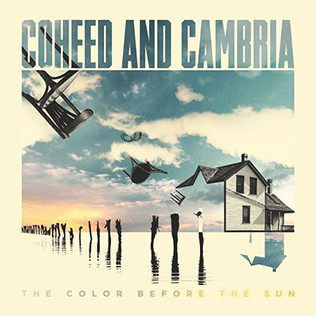

The Color Before the Sun
Coheed and Cambria
Released: October 16, 2015
Band Members and Producers
Claudio Sanchez - vocals, guitar
Travis Stever - guitar, backing vocals
Josh Eppard - drums, percussion, backing vocals
Zach Cooper - bass, backing vocals
Jay Joyce - Producer
Tracks
Track #
Track Title
Track Length
1
Island
5:02
2
Eraser
3:52
3
Colors
4:41
4
Here to Mars
4:01
5
Ghost
2:45
6
Atlas
6:03
7
Young Love
3:50
8
You Got Spirit, Kid
4:11
9
The Audience
6:10
10
Peace to the Mountain
6:33